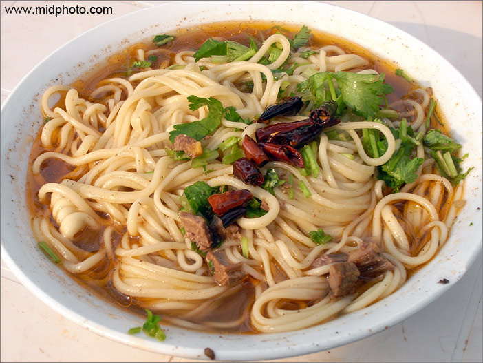

老杨摄影系列（13）
107国道食物专题
by 长沙杨飞
昨天领导说图书馆需要几张春天来了的图片，我就到院子里拍了一圈。这些年我一直是纪实为主，花花草草很久没拍过了。回来一看，所有的图片都发黄，这台索尼A7的白平衡坑爹啊，我偷懒没用RAW原始格式，颜色怎么也调不正。用是最便宜的索尼FE28-70套头，不知怎么回事镜头也出故障，机身老提示无镜头，真是抓瞎了。下面这些发黄的图片都是这台索尼机拍的。

兰州牛肉拉面，一碗三块五毛。
杨飞，2016年3月4日，长沙
----------------------------------
关注老杨作品：
1，杨飞摄影 www.midphoto.com
2，微信：yangfei789288
3，微信公众号：长沙杨飞
4，新浪微博@长沙杨飞
5，推特Twitter@feiyang17
6，Facebook：yangfei999999@hotmail.com
-----------------------------------------